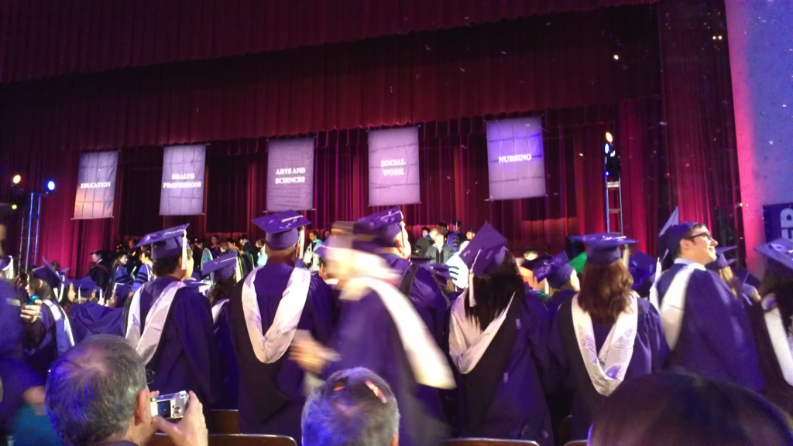
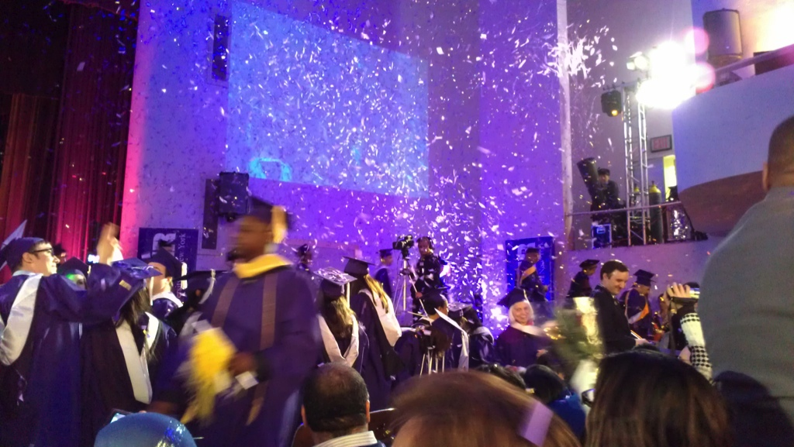
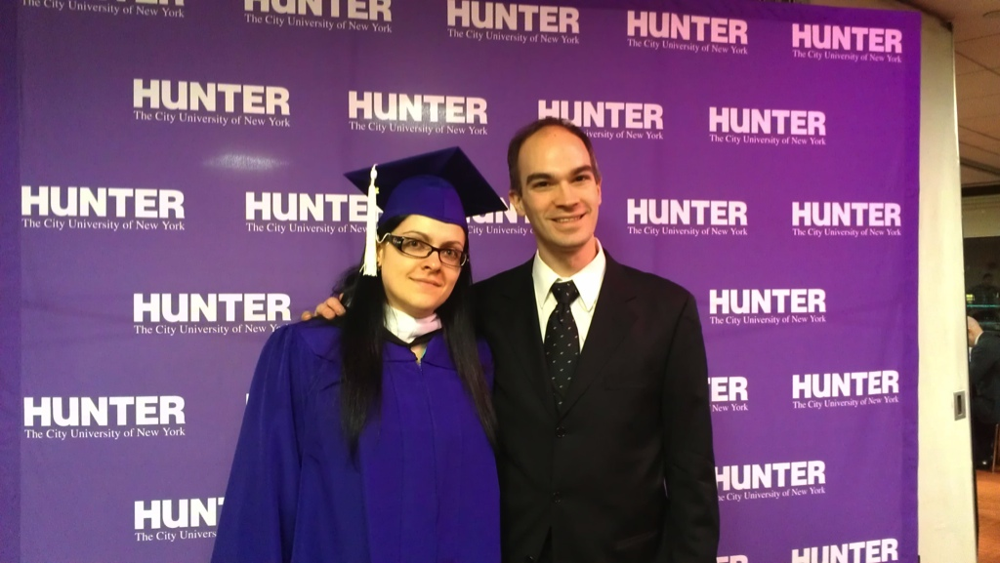

Aliona's
Graduation from Hunter College - January, 2013

My thoughtful but goofy parents came up from New Jersey to celebrate
Aliona's graduation. Mom had trouble with her camera.

For spring ceremonies, Hunter College usually has their graduation in
much bigger venues like Madison Square Garden and the Jacob Javits
Center. Winter ceremonies are smaller, so they hold them at a
fairly large auditorium in Hunter College. Aliona was selected
for special recognition for her accomplishments at Hunter, and
therefore got us VIP treatment, not having to wait in the freezing cold
on line with the masses, with us also being invited to a reception with
wine and appetizers afterward.

The music started, and Aliona walked right behind the faculty as they
took to the stage.

Aliona takes her seat front and center on stage, alongside the other
specially recognized students.

The big purple Hunter College mascot jumps out and goes crazy with the
pom-poms in front of Aliona until it transitions from funny to
uncomfortable.

The students on stage were worried about the auditorium being very
empty. To their relief, the rest of the students filed in,
filling up the seats and waving their own pom-poms.

The national anthem is sung by a girl who that same week sung the
national anthem at Obama's inauguration.

A man playing bagpipes marches past the stage.

The president of Hunter College reads a somewhat accurate speech about
Aliona, her history, her accomplishments, and her future goals.
Applause follows.

Walter Isaacson, the famous author, is introduced.

The president of Hunter College awards Walter an honorary degree.

Dramatic medium close-up of Walter.

Aliona listens to Walter talk to the graduates of Hunter College about
what Steve Jobs was like.

As the ceremony concludes, confetti is fired into the air above the
graduates and audience.

Aliona and I pose for this photo at the reception. At this point,
I'm elated for Aliona, but a bit upset that most of the chicken was
eaten. Not only are we treated to dinner by my parents, but that
night Aliona learns her second paper was accepted for publishing, and
before all that, I found more chicken.